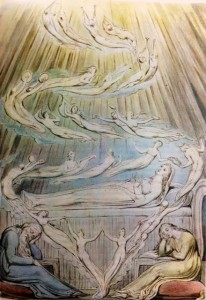

The volumes on dreams and dream interpretation in the Gleason collection are, for the most part, a fusion of occult ideas and mainstream psychological theories inspired by Freud. Many seek to connect dreams with telepathy and communication with the dead. The books range from the more lighthearted, such as Elliot O’Donnell’s The Meaning of Dreams, to far more serious volumes by Nandor Fodor.
The Forgotten Language: An Introduction to the Understanding of Dreams, Fairy Tales, and Myths
Erich Fromm
New York: Rinehart & Co., 1951 [First edition.]
Summary: Fromm summarizes and builds upon ideas expressed by Freud and Jung about the interpretation of dreams and archetypes. The materials for the books were taken from lectures the author gave on psychology as a professor at Bennington college.
New Approaches to Dream Interpretation
Nandor Fodor
Published: 1951 [First edition.]
Summary: Fodor builds upon Freud’s ideas about dream interpretation. He also discusses prenatal personality determinants, common nightmares, and miscellaneous issues such as hysterical color blindness.
Elliott O’Donnell
London: E. Nash, 1911 [First edition.]
Summary: This book is divided into two parts– “Every Night Dreams” and “Out of the Ordinary” dreams. O’Donnell describes the symbolism of seeing certain things in dreams, including colors, animals, events. As with most of his books, O’Donnell draws from his own experience in compiling the information in this book.
The Handbook of Dream Analysis
Emil Arthur Gutheil
New York: Liveright, 1951 [First edition.]
Summary: In this book, Gutheil presents a comprehensive look at the world of dreams. He presents the mechanics of dreaming as well as interpretive theories, and offers commentary on several well-known dream interpreters, including Freud. Also discussed is the application of dream interpretation to psychotherapy.
Andre Sonnet
Philadelphia: Chilton Co., Book Division, 1961 [First American edition.]
Summary: Sonnet covers a range of subjects within Dreams, including symbolism, warnings, precognition, and historical examples of dream interpretation.


{kind=link}